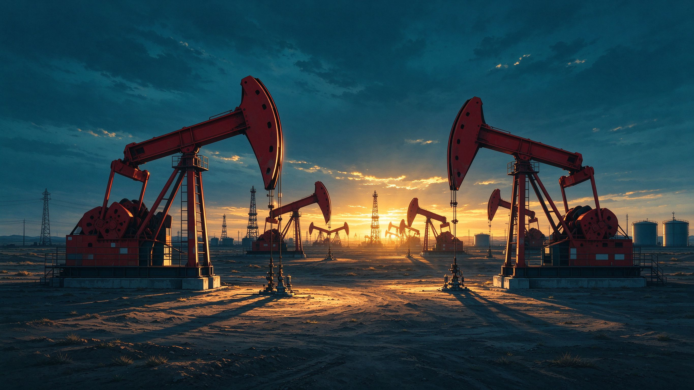
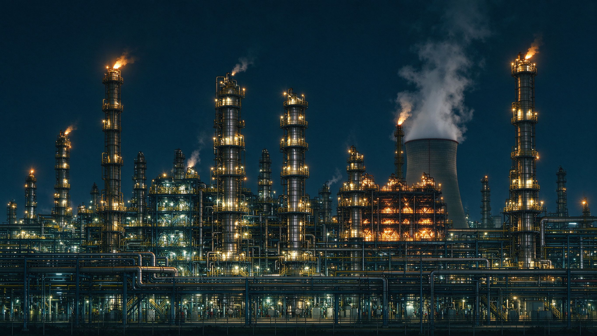
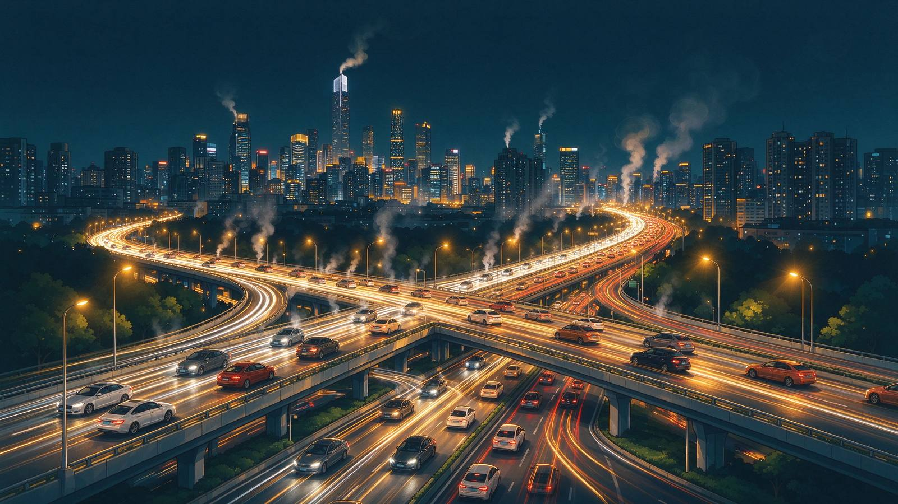

一滴汽油的中国之旅
从地下油田到加油站，一滴汽油走过的每一步，都是中国能源工业与双碳转型的时代注脚。 它穿过原油开采 → 原油运输 → 炼油炼化 → 成品油配送 → 终端燃烧五个环节， 也穿过了新中国从"贫油国"走向"能源大国"、迈向"双碳强国"的七十余年。
你加满一箱油的时候，可曾想过——这一升汽油，刚刚走过怎样的一段中国旅程？
它从地下数千米的油藏出发，经管道与油轮穿越山海，在千万吨级炼厂里历经蒸馏与催化， 再由油罐车送到你身边——最后，在发动机里完成一次燃烧，把能量交给道路，把二氧化碳交给天空。
这五个环节，横跨数千公里，牵动中国能源版图，也写下了一段"从石油到碳足迹"的时代叙事。

从"贫油国"到大油田
六十多年前，中国曾被断言"贫油"。大庆油田的开发让共和国甩掉了这顶帽子；此后胜利、塔里木、海上油田相继建成， 中国成长为世界第二大炼油国。一滴原油的旅程，从这里开始。

能源动脉与千万吨级炼厂
中哈原油管道、海上油轮、纵横的管网——原油跨越数千公里来到炼厂；常减压蒸馏、催化裂化、重整， 中国炼化工业用世界级的规模，把原油变成汽油。这是"路上的中国"：运输 + 炼化，占碳足迹不到一成，却是故事里不可缺的一环。

保有量全球第一的"燃烧的时代"
中国机动车保有量居世界前列，数亿辆汽车每天在路上燃烧汽油。终端燃烧贡献了这滴油 82.5% 的碳足迹—— 它既是故事的高潮，也是减排的主战场。
从"说不清"到"算得清"
过去，一滴汽油到底排放多少碳，"说不清"。2020 年，中国宣布"3060"双碳目标； 2024 年，GB/T 24067《产品碳足迹核算通则》落地——中国的碳账，第一次有了全国统一的标准算法。 这滴油的全生命周期碳足迹：2.68 kg CO₂e/L。
甩掉"贫油国"帽子，炼化工业自主崛起
中国宣布碳达峰、碳中和"3060"目标
GB/T 24067 产品碳足迹核算通则发布
一滴油的碳账，终于"算得清、看得见"
按每升车用汽油计（科普参考值）
从开采到燃烧，碳排放量整体上升并主要集中于终端燃烧环节（占 82.5%）——这正是"电动化替代 + 源头减排"的减排逻辑所在。
每个环节怎么减排 ▲ 收起
我们的核算边界 ▼ 展开
核算范围（包含）
排除范围（不纳入）
炼化环节的 CCUS ▼ 展开

炼油炼化与终端燃烧是汽油碳足迹两大主要排放来源；CCUS 是实现石化行业深度减排的关键路径之一。
按中国电网平均排放因子（生态环境部 2024 年电力碳足迹因子 0.5777 kgCO₂e/kWh）估算，电动车每公里碳排放约为燃油车的一半，且随电网清洁化优势持续扩大。